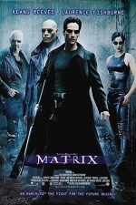

|  |
MatrixBir bilgisayar programcısı olan Thomas Anderson aynı zamanda Neo nickname'li çok usta bir "hacker" dır. Ancak siyah takım elbiseli ve gözlüklü adamların yakın takibindedir. Bu takibin nedenini ise karşılaşacağı Morpheus'dan öğrenecektir. Neo, birden kendini Morpheus'un anlattıklarına güvenmek zorunda kaldığı büyük bir komplonun içinde bulacaktır. İçinde yaşadığımızı sandığımız bu dünya tamamiyle aldatıcıdır. Neo, Trinity ve Morpheus'un da yardımıyla kendilerini bu düzeni yıkmaya adayan bir grubun içine katılır. |